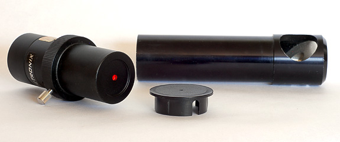
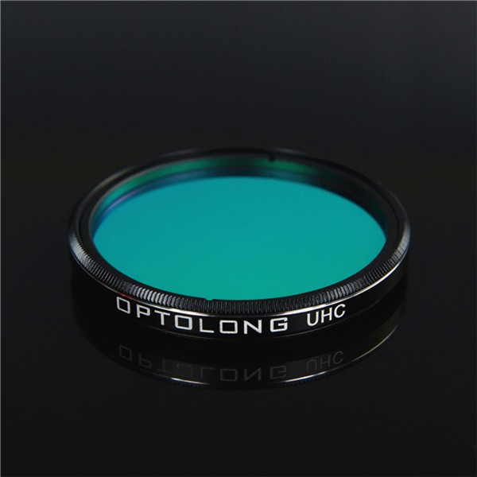
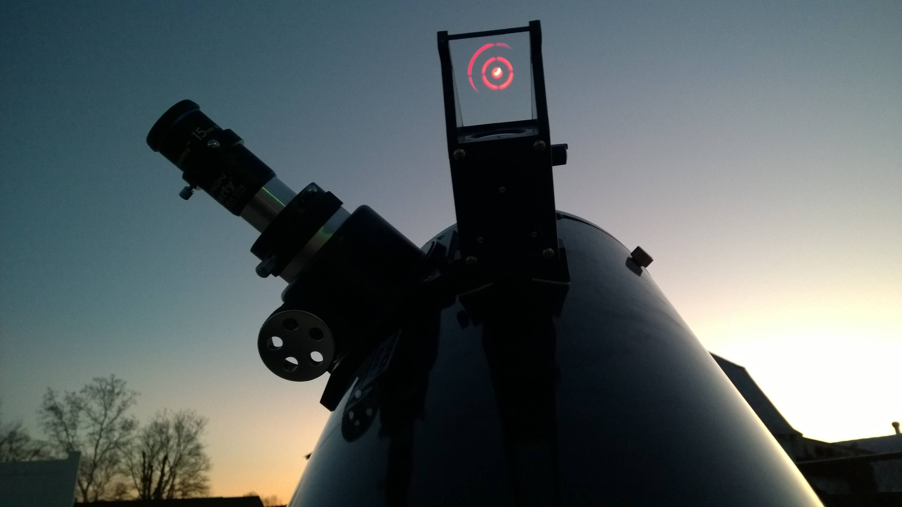

Christmas is coming and your kids are showing a lot of interest in astronomy and stargazing. You think that a telescope could help to grow their interest and ignite their passion for science and technology. Unfortunately, there are lots of choices in the market and this can make finding the right telescope very confusing.
I’m going to provide some directions in order to identify what is the most suitable telescope for you and/or your kids.
Before to get into many details, you should know that the best telescope is the one that you are going to use the most.
If you want to see the Moon and the planets a small refractor will reveal a nice image of the craters of the moon and some details of Jupiter and Saturn. If you have more budget you may want to consider a larger refractor or a compact catadioptric like a Maksutov-Cassegrain or a Schmidt-Cassegrain. Those telescopes are more expensive and are also able to deliver a much higher magnification, which makes them ideal for solar system observation.
Be aware that the maximum magnification that you should consider is 2 times the diameter of the telescope aperture in mm. For example, a telescope with 90mm of the aperture will be able to deliver a magnification of x180. Very cheap telescopes are usually advertised by really high magnification rather than by the aperture. Stay away from those telescopes!
Planets and the Moon are very cool but soon you and your kids will get bored of observing just a few objects. The next natural step will be to explore a list of Deep Sky Objects (DSO) which is almost endless. My recommendation for DSO (and also suitable for observing planets) is to consider a Newtonian telescope with at least 150mm of aperture, ideally 250mm. If you have more budget you can consider a catadioptric like a 180mm Maksutov-Newtonian or a 250mm Schmidt-Cassegrain with a focal reducer.
The ideal telescope mount for a beginner is alt-azimuth. This is because the eyepiece stays always in a comfortable position. With an equatorial mount, the position of the eyepiece can be challenging, especially for a Newtonian telescope. Equatorial mounts are mandatory for astrophotography and from my point of view, are not the best option for beginners.
The most popular type of alt-azimuth mount is Dobson because it is cheap and easy to manage, even for a kid. Unfortunately, a Newtonian telescope with a Dobson mount (a.k.a. Dobsonian) can be quite heavy and bulky. The 250mm Dobson telescope I use in the Stargazing Labs can be used by ~9 years old kid but is around 30kg weight. If you go bigger than that, you probably need two people to move it; otherwise, you will need to spend some more time working out in the gym.
Computerized telescopes can help a lot to find objects, especially in highly polluted areas. Having this feature will increase the cost quite a bit.
If you are looking for something small that can fit in a backpack or in a small car when you do camping, you should consider using binoculars with a tripod. I recommend 7x50 binoculars as a cheap option or if you have more budget consider bigger apertures like 20x80 or 25X100.
| Main use | Small Budged | Recommended |
|---|---|---|
| Moon and planets | 90mm refractor 90mm Maksutov-Cassegrain |
150mm Maksutov-Cassegrain 150mm Schmidt-Cassegrain |
| DSO and Moon and planets | 150mm Dobsonian | 250mm Dobsonian |
| Computerized options | 200mm PUSHTO Dobsonian | 200mm GOTO Schmidt-Cassegrain (focal reducer is highly recommended) |
| Small option for DSO | 7x50 binoculars | 25X100 binoculars |
The mirrors of the telescope need to be well aligned in order to deliver a high-quality image. If you end up with a Newton telescope, you should consider buying a laser collimator and a Cheshire eyepiece. The Maksutov-Cassegrain and Schmidt-Cassegrain telescopes don’t need additional tools.

These filters try to reduce as much as possible the artificial light coming from the city. While those filters are transparent for a wide range of the spectrum, it blocks certain particular regions of well known artificial light bulbs. Knowing the dominant light pollution in your city will help you to choose the right filter will save time and money.
I highly recommend the Ultra-High Contrast filter, which allows the transmission of nearly 100% of the radiation from both O-III and the H beta lines. All annoying, scattered light from other wavelength sources, including local artificial light pollution, is filtered out. With this strong blocking of the sky, a high detail becomes visible for gas nebulae and planetary nebulae.
UHC-E variant increases the contrast of emission nebulae and also comets. It’s recommended for observation of emission nebulae and comets with small telescopes under light-polluted skies.

Most probably, your new telescope will also come with a not very useful Moon filter. I strongly recommend getting a neutral density filter (0.8, 0.9). This reduces the bright glare of the Moon and reveals a highly lunar detail and surface features.
Until you are very familiar with the night sky, you can lose many hours trying to find a particular object. Nothing is more frustrating than a star cluster, a nebula, or a galaxy that you want to look at but simply cannot find. The red dot and projector finders can help to reduce this frustration.

I hope this information has been useful and it helps you to decide what telescope is best for you.
If you are still unsure about what telescope suits you best, consider attending a stargazing session in your local astronomical society or, if you are living in Auckland, consider joining one of the Stargazing Lab organised by Skylabs in Maraetai Beach.
If you already have a telescope and you would like to learn how to use it, Skylabs can help you. In the Telescope Labs, you will learn how to properly assemble and balance your telescope, align the finderscope, collimate the mirrors, and choose the appropriate eyepieces. Skylabs can also help you learn how to find objects in the sky with your own telescope.